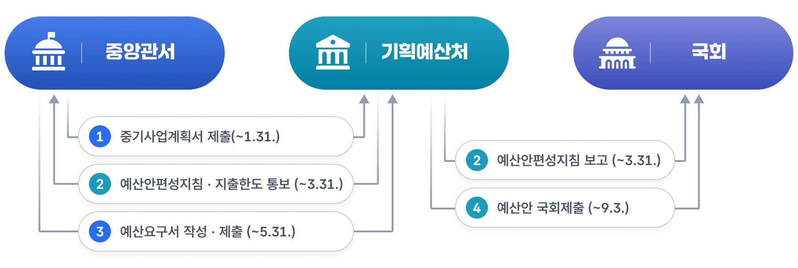

예산・결산・운용절차
1. 예산의 종류
우리나라의 예산은 정부가 예산안을 국회에 제출하는 시기와 국회의 심의·확정 여부에 따라 1)본예산 2)수정예산안 3)추가경정예산안 4)준예산으로 구분할 수 있습니다. 이는 헌법과 국가재정법에 근거한 예산운영 방식으로, 국가재정이 일정한 절차와 통제를 거쳐 집행되도록 하기 위한 제도입니다.
- 본예산은 정부가 회계연도 개시 전 법정 기한에 맞추어 국회에 제출하고, 국회가 이를 심의·의결하여 확정한 당초 예산입니다. 정부는 매년 9월 초까지 예산안을 제출하고, 국회는 연말까지 이를 심의하여 확정하게 됩니다.
- 수정예산안은 정부가 이미 국회에 제출한 예산안에 부득이한 사유가 생겨 내용을 일부 수정할 필요가 있을 때 다시 제출하는 예산안입니다. 이는 국회 심의 이전에 정부가 내용을 조정하는 제도이며, 경제여건 변화나 사업계획 조정 등을 반영할 때 활용됩니다.
- 추가경정예산안은 국회가 확정한 본예산을 변경할 필요가 있을 때 정부가 다시 국회에 제출하는 예산안입니다. 전쟁, 대규모 재해, 경기침체, 대량실업 등 중대한 사정이 있을 때 제한적으로 편성할 수 있습니다.
- 준예산은 회계연도 개시일까지 예산이 국회를 통과하지 못했을 때 한시적으로 집행하는 예산입니다. 헌법은 국가기능의 중단을 막기 위해 최소한의 필수 경비만 전년도 예산에 준하여 집행할 수 있도록 하고 있습니다.
2. 예산의 구성
｢국가재정법｣상 예산은 원칙적으로 조세수입을 기반으로 일반회계와 특별회계로 구성되는 국가의 세입·세출 계획을 의미하며, 기금은 예산과 구분되는 별도의 재정수단입니다. 기금은 국가가 특정한 목적을 위하여 특정한 자금을 신축적으로 운용할 필요가 있을 때 법률에 근거하여 설치하는데 출연금･부담금 등을 주요 재원으로 합니다. 따라서 법률상 엄밀한 의미의 예산에는 기금이 포함되지 않는다고 보시는 것이 맞습니다. 반면, 우리가 일상적으로 또는 정책적으로 넓게 말하는 실질적 의미의 예산은 형식적 의미의 예산과 기금을 함께 포괄하는 개념으로 이해할 수 있습니다. 이러한 예산과 기금은 다음과 같이 구성됩니다.
예산은 예산총칙, 세입세출예산, 계속비 명시이월비 국고채무부담행위로 구성됩니다. 예산총칙은 그해 예산의 총규모와 집행상의 기본 원칙을 정하는 부분이고, 세입세출예산은 한 회계연도 동안의 수입과 지출을 구체적으로 담는 핵심 내용입니다. 계속비는 공사나 연구개발처럼 여러 해에 걸쳐 진행되는 사업을 위해 미리 총액과 연부액을 정해 두고 나누어 집행할 수 있게 한 제도입니다. 명시이월비는 연도 안에 다 쓰기 어려운 예산을 미리 밝혀 다음 연도로 넘겨 쓰는 것이며, 국고채무부담행위는 예산이 편성되기 전에라도 국회의 의결을 받아 장래의 채무를 부담할 수 있게 하는 제도입니다. 한편, 기금(기금운용계획안)은 운용총칙과 자금운용계획으로 나뉩니다. 운용총칙에는 기금의 목적, 사업방향, 자금의 조달과 운용의 기본 틀이 담기고, 자금운용계획에는 실제 수입과 지출의 세부 내용이 포함됩니다.
3. 예산과 국가재정운용계획
국가재정운용계획은 정부가 ｢국가재정법｣ 제7조에 따라 재정운용의 효율성과 건전성을 제고하기 위하여 향후 5년 이상에 걸친 재정의 목표, 수입·지출 전망, 분야별 재원배분 방향을 제시하는 중기 재정계획입니다. 단년도 예산이 한 해의 재정만 보여 준다면, 국가재정운용계획은 중장기 국가비전과 재정제약을 함께 반영해 재정운용의 큰 방향을 제시한다는 점에서 더 상위의 틀 역할을 합니다.
중요성은 크게 세 가지입니다.
- 급격한 경제·사회 변화 속에서도 재정의 일관성과 지속가능성을 확보할 수 있습니다.
- 총수입·총지출·재정수지·국가채무를 함께 보며 재정지속가능성을 사전에 관리할 수 있습니다.
- 분야별 재원배분 우선순위를 제시함으로써 복지, 성장, 안전, 교육 같은 정책 간 조정 기능을 수행합니다.
예산안 편성과의 관계에서 보면, 국가재정운용계획은 단년도 예산편성의 기본 틀입니다. 각 부처는 이 계획에서 제시된 중기 재정방향과 재원배분 원칙을 고려해 예산요구를 하며, 정부는 이를 바탕으로 다음 연도 예산안을 편성합니다. 즉, 국가재정운용계획이 “앞으로 어디에 얼마나 쓸 것인가”를 정하는 중기 지도라면, 예산안은 그 지도를 토대로 “내년에 무엇부터 실행할 것인가”를 구체화한 연차 계획이라고 보시면 됩니다.
따라서 국가재정운용계획은 예산편성의 참고자료를 넘어, 예산과 재정을 중장기 관점에서 연결해 주는 핵심 제도입니다. 이 제도가 있어야 단년도 예산이 단절적으로 편성되지 않고, 국가재정 전체가 일관된 전략 아래 운영될 수 있습니다.
4. 정부의 예산안 편성
정부의 예산안 편성권은 ｢대한민국헌법｣ 제54조에 따라 정부에 있으며, 국회는 이를 심의·확정합니다. 예산안은 각 중앙관서의 장이 제출한 예산요구서를 바탕으로 기획예산처장관이 종합·조정하여 편성하며, ｢국가재정법｣에 그 절차가 규정되어 있습니다.
먼저 각 중앙관서의 장은 매년 1월 31일까지 5회계연도 이상의 신규사업 및 주요 계속사업에 대한 중기사업계획서를 제출합니다. 이 계획서는 국가재정운용계획과 예산안 편성, 기금운용계획안 작성의 기초자료로 활용됩니다.
이후 기획예산처장관은 국무회의 심의와 대통령 승인을 거쳐 다음 연도 예산안편성지침을 매년 3월 31일까지 각 중앙관서의 장에게 통보하고, 국회 예산결산특별위원회에도 보고합니다. 편성지침에는 예산안 편성의 기본방향, 재정운용방식, 분야별 중점투자방향 등이 포함되며, 필요시 지출한도도 제시될 수 있습니다.
각 중앙관서의 장은 이에 따라 세입세출예산, 계속비, 명시이월비, 국고채무부담행위 요구서를 작성하여 5월 31일까지 제출합니다. 기획예산처장관은 이를 바탕으로 정부 예산안을 편성한 뒤 국무회의 심의와 대통령 승인을 거쳐 9월 3일까지 국회에 제출합니다. 부득이한 사유가 있는 경우에는 수정예산안도 제출할 수 있습니다.

5. 국회의 예산안 심의 및 확정
국회의 예산심의는 정부가 제출한 예산안과 기금운용계획안을 국회가 검토하여 수정·확정하는 절차를 말합니다. 이는 정부가 편성한 재정계획을 국회가 다시 심사함으로써, 예산이 헌법과 법률에 맞게 편성되었는지, 정책 우선순위가 적절한지, 재정규모와 배분이 타당한지를 확인하는 과정입니다. 아울러 단순한 형식적 승인 절차가 아니라, 정부 재정운용에 대한 민주적 통제와 재정책임성을 확보하는 중요한 장치라고 할 수 있습니다.
먼저 정부가 예산안을 국회에 제출하면, 국회는 본회의에서 정부의 시정연설을 듣습니다. 시정연설은 정부가 예산 편성의 배경과 재정운용 방향을 설명하는 절차로, 국회 심사의 출발점이 됩니다. 이 과정에서 국회는 정부가 제시한 재정운용의 큰 방향을 먼저 확인하고, 이후 세부심사에 들어갈 준비를 하게 됩니다.
그다음 예산안은 소관 상임위원회로 회부되어 예비심사를 받습니다. 이 단계에서는 각 부처별 예산을 중심으로 세부사업의 필요성, 적정성, 재원배분의 타당성을 검토하며, 상임위원회는 그 결과를 국회의장에게 보고합니다. 특히 기금운용계획안의 경우에는 기금을 관리하는 부처와 실제 사업을 수행하는 부처가 다를 수 있어, 관련 상임위원회 간 의견수렴 절차도 함께 이루어집니다.
이후 예산안은 예산결산특별위원회로 넘어가 종합심사를 받습니다. 예산결산특별위원회는 부처별 예산을 종합적으로 조정하고, 상임위원회의 심사결과를 바탕으로 재정총량과 분야별 배분, 증감 필요성 등을 집중적으로 검토합니다.
마지막으로 예산안은 국회 본회의에서 심의·의결됩니다. 본회의에서는 예산결산특별위원회의 심사보고를 듣고 질의·토론을 거쳐 표결을 진행하며, 의결이 이루어지면 예산은 확정됩니다. 즉, 국회의 예산심의는 시정연설, 상임위원회 예비심사, 예산결산특별위원회 종합심사, 본회의 의결로 이어지는 다단계 절차이며, 이를 통해 정부예산이 보다 투명하고 책임 있게 확정되도록 하는 것입니다.